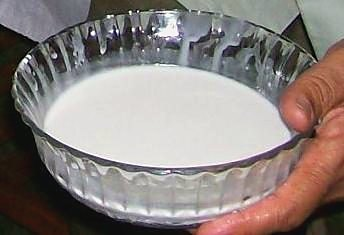

Contains: tree nuts, mustard
Ingredients
Quantities for 4.
- 3 cups cooked and cooled Riceday-old rice, grains separate
- 1 cup, fresh grated Coconut
- 1 tsp Mustard Seeds
- 1 tbsp Urad Dal
- 1 tbsp Chana Dal
- 3, broken Dried Red Chilli
- 2, slit Green Chillioptional
- 12 Cashewoptional
- 2 sprigs Curry Leaves
- 1 tsp, finely chopped Gingeroptional
- 1/4 tsp Asafoetidause compounded-free hing to keep this gluten-free
- 3 tbsp Coconut Oil
- to taste Salt
Cookware
stovetop, kadhai
Checked against the ingredient list for ten allergens: milk, egg, fish, crustaceans, tree nuts, peanuts, sesame, mustard, soy and gluten. Brands vary, so read the label on anything new to you.
Before you start
- Cook the rice at least 2 hours ahead, spread it on a wide plate and let it cool completely. Warm rice turns this to mush.
- Grate the coconut fresh. Desiccated coconut will not give the moisture this dish needs.
Method
- Spread the cooled rice on a wide plate, sprinkle with salt and 1 tbsp of the coconut oil, and separate the grains with your fingers.Oiling the rice before anything else is added keeps the grains from clumping later.
- Dry roast the grated coconut in a kadhai over low heat for 4 to 5 minutes until it just turns pale gold and smells toasted. Set aside.Stop while it is blonde. Brown coconut tastes of caramel and overwhelms the dish.
- Heat the remaining coconut oil in the same kadhai and crackle the mustard seeds.
- Add the urad dal, chana dal and cashews and fry until all three are golden, about 2 minutes.
- Add the red chillies, slit green chillies, ginger, curry leaves and asafoetida and fry 30 seconds until the leaves crisp.
- Return the toasted coconut to the pan and stir for 1 minute so it takes up the tempering.
- Turn off the heat, tip in the rice and fold everything together gently with a flat spatula.Fold, do not stir. A spoon breaks the grains and you lose the texture entirely.
- Cover and let it sit 5 minutes so the flavours settle, then check the salt and serve.
Storage
Traditionally this travelled all day, which is why it exists, but cooked rice is the one dish where that habit carries real risk. Cool it quickly, spread out, and refrigerate within two hours; it keeps 3 days. If it is going in a lunchbox, pack it cold with an ice block. Bring it back to room temperature rather than microwaving, which dries the coconut out.
Nutrition Medium estimate
Low protein: 5 g a serving, 6% of the calories
| Per serving90 g | Per 100 g | |
|---|---|---|
| Calories | 364 kcal | 405 kcal |
| Protein | 5.4 g | 6 g |
| Carbohydrate | 46.2 g | 51 g |
| of which sugars | 1.8 g | 2 g |
| Fibre | 2.8 g | 3 g |
| Fat | 17.5 g | 20 g |
| of which saturated | 14.5 g | 16 g |
| of which unsaturated | 1.7 g | 2 g |
Ingredients given to taste count as zero, so the real figures run a little higher. Nearest database match used for asafoetida, curry leaves, urad dal. Estimated from raw ingredients using USDA FoodData Central.
More like this: Quick Indian recipes (30 min) · Vegan Indian recipes · Vegetarian Indian recipes · Gluten-free Indian recipes · Dairy-free Indian recipes · No onion no garlic recipes · Tamil Nadu recipes
Times, yields, allergens and nutrition are guidance. Use your own judgement on doneness and on storing. More in About.